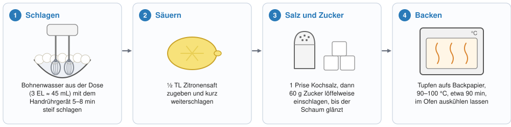

Hilfekarten
Erst selbst probieren. Jede Karte deckt ihre Hilfe in Stufen auf, so wenig wie möglich, so viel wie nötig.
Hilfe zu 1a
Hilfe zu 1b
Hilfe zu 2b
Hilfe zu 3a
Hilfe zu 3b
Hilfe zu 3c
Hilfe zu 3d
Hilfe zu 4a/4b
Vertiefungen
★ = vertiefend · ★★ = anspruchsvoll. Die Ergebnisse gehören in Ihre Unterlagen; die Abbildungen und Werkzeuge helfen beim Denken, sie ersetzen keine Lösung.
Onsen-Ei: Eigelb fest, Eiklar weich
In japanischen heißen Quellen (Onsen) werden Eier 30 bis 40 Minuten bei 65 bis 68 °C gegart. Danach ist das Eigelb cremig fest, das Eiklar aber noch weich und milchig, genau umgekehrt wie beim gekochten Ei nach kurzer Zeit.
Eischnee in der Kupferschüssel
Französische Köche schlagen Eischnee traditionell in Kupferschüsseln. Der Schaum wird feiner und fällt seltener zusammen. Untersuchungen zeigen, dass Cu2+-Ionen von der Schüsselwand an das Eiklarprotein Ovotransferrin binden, das dann schwerer entfaltet.
Natron statt Zitronensaft?
Ein Rezept im Internet empfiehlt, statt Zitronensaft eine Messerspitze Natron (Natriumhydrogencarbonat) ins Bohnenwasser zu geben. Eine Lösung von Natron hat einen pH-Wert von etwa 8.
Schäumt Bohnenwasser nur wegen der Proteine?
Bohnenwasser enthält neben Proteinen auch Saponine, seifenähnliche Pflanzenstoffe mit einem unpolaren und einem polaren Molekülteil (Shim et al., J. Vis. Exp. 2018).
Baiser aus Bohnenwasser
Für etwa 20 kleine Baisers: 1 Dose Kichererbsen (Abtropfgewicht etwa 240 g), ½ TL Zitronensaft, 1 Prise Salz, 60 g Zucker. Die Kichererbsen selbst ergeben zum Beispiel Hummus.
- Schlagen: 3 EL Bohnenwasser (etwa 45 mL) mit dem Handrührgerät 5 bis 8 Minuten steif schlagen.
- Säuern: Zitronensaft zugeben und kurz weiterschlagen.
- Salz und Zucker: Salz zugeben, dann den Zucker löffelweise einschlagen, bis der Schaum glänzt und Spitzen stehen bleiben.
- Backen: Tupfen auf Backpapier setzen, bei 90 bis 100 °C etwa 90 Minuten trocknen, im ausgeschalteten Ofen auskühlen lassen.

Fragen und Antworten
Warum schäumt Bohnenwasser, Wasser aber nicht?
In reinem Wasser zerplatzen die Blasen sofort. Im Bohnenwasser wandern Proteine an die Oberfläche jeder Blase, entfalten sich dort und bilden einen dünnen, zähen Film. Der hält die Blasen zusammen. Saponine aus den Hülsenfrüchten helfen dabei mit.
Warum soll der Zucker erst am Ende hinein?
Zucker macht die Flüssigkeit zäh. Das stabilisiert einen fertigen Schaum, erschwert aber, dass sich die Proteine überhaupt erst an der Grenzfläche entfalten. Deshalb erst steif schlagen, dann den Zucker löffelweise zugeben.
Ist das Baiser schwerer verdaulich, weil die Proteine denaturiert sind?
Nein, eher leichter. Die Verdauungsenzyme spalten Peptidbindungen. An einer entfalteten Kette kommen sie besser an diese Bindungen heran als an ein dicht gefaltetes Protein.